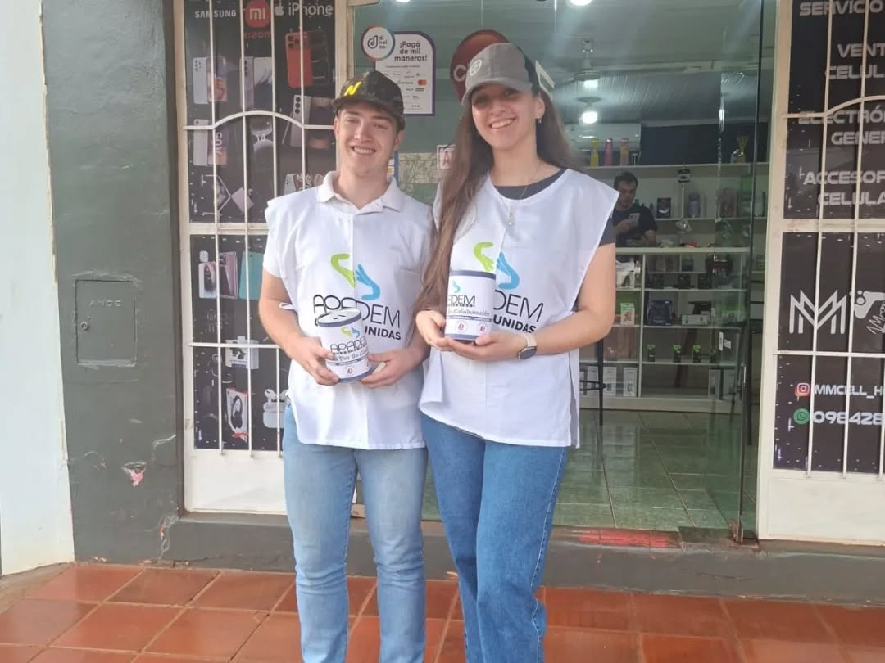
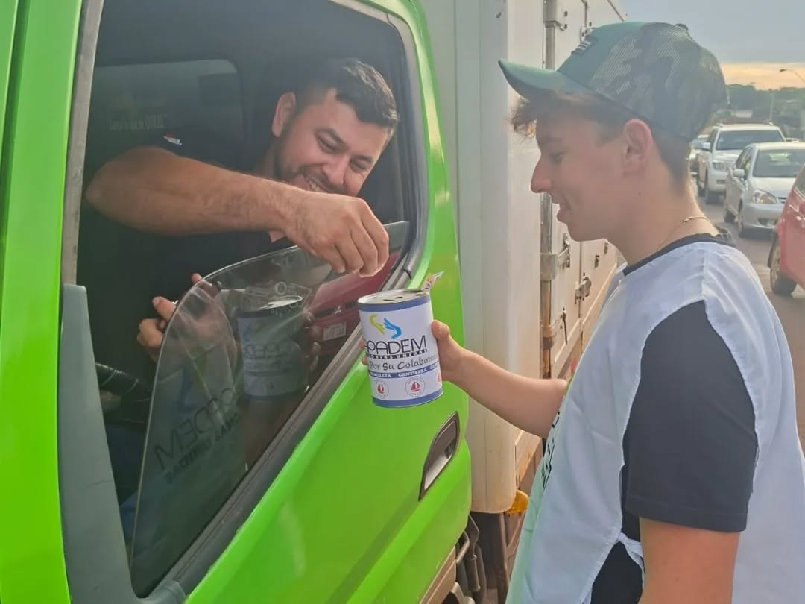
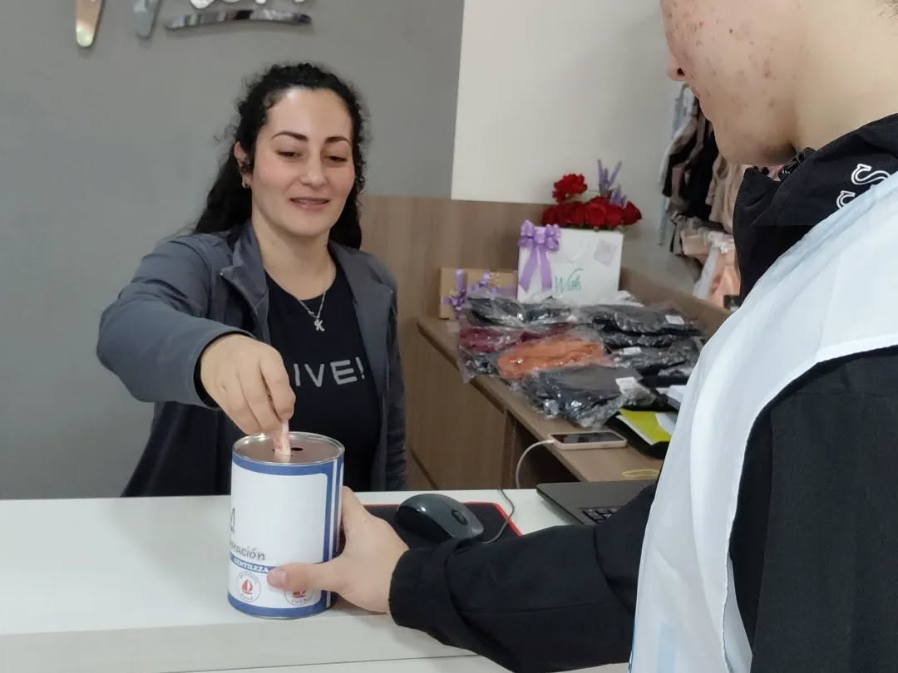
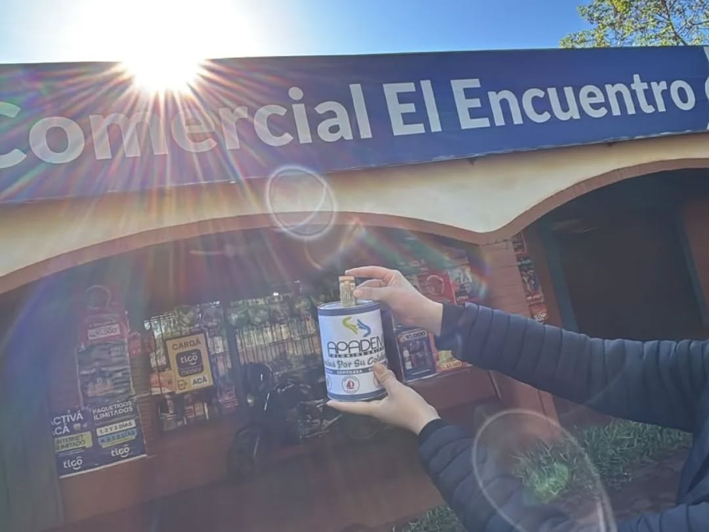
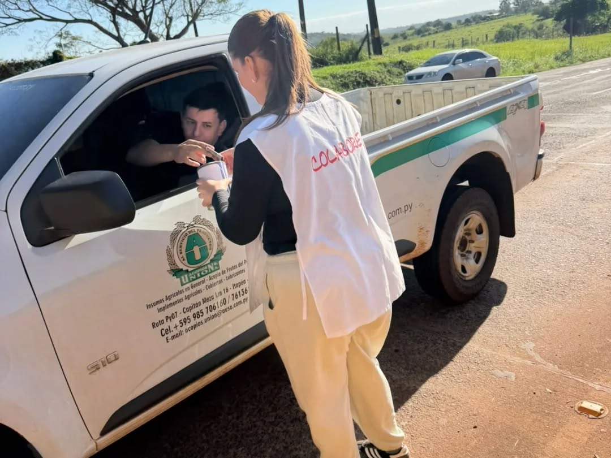
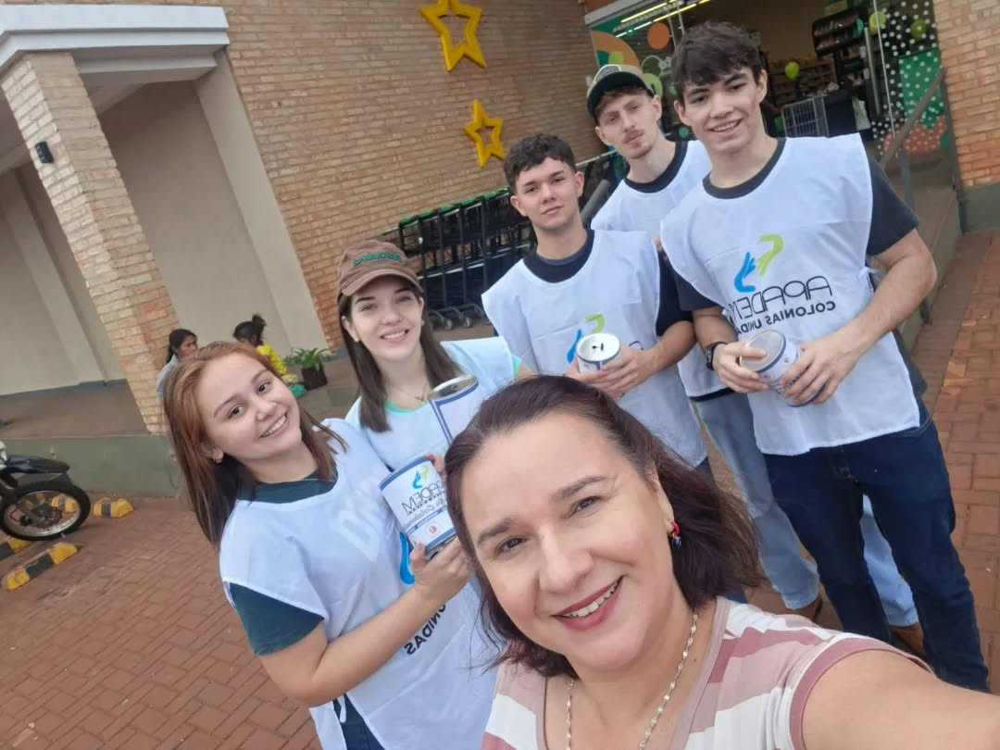

Español
English
Deutsch
日本語
Inicio
Sobre Nosotros
Transparencia
Pacientes
APADEM Colonias Unidas






❮
❯
Nuestros Servicios
Atención médica a cargo de especialistas
Entrega de medicamentos
Pago de escuelas especializadas
Entrega de silla de ruedas
Cirugías de pie bot
Pago de traslado de pacientes
Tratamientos para sordos
Atención, tratamiento y cirugías de problemas oftalmológicos
Cirugías de ano imperforado
Cirugías de labio leporino y fisura palatina
Rehabilitación, estimulación temprana, ortodoncia, en el H.P.M.